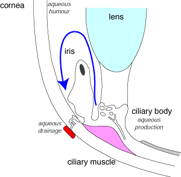
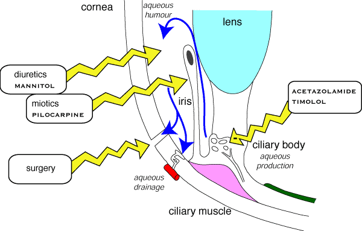

Glaucoma is relatively common in dogs. It is an increased intraocular pressure caused in dogs by reduced drainage of aqueous fluid. (In man, it is often caused by increased production of aqueous - beware the confusion when reading human textbooks.) Increased intraocular pressure will damage the retina leading to blindness; the immediate treatment aims to reduce the intraocular pressure, longer term treatment in dogs is usually to increase aqueous drainage. Surgery is sometimes used to treat glaucoma - a hole is made at the edge of the cornea and the aqueous humour drains out under the cornea.
For emergency reduction of intraocular pressure, osmotic diuretics such as mannitol (iv) or glycerine (po - beware - makes dogs vomit!) are usually used. Carbonic anhydrase inhibitors such as acetazolamide also have a direct effect on the ciliary body to reduce aqueous formation. Dorzolamide is a more modern drug used in people.
diuretics
Miotics are used to lift the iris away from the trabecular meshwork and allow
the aqueous fluid access to drain away. Pilocarpine, a cholinergic
agonist, which acts rapidly and lasts about six hours is sometimes used. Occasionally,
physostigmine, a longer acting anticholinesterase
is used, although it may cause retinal problems in long term use.
Miotics are contraindicated in anterior uveitis / anterior lens luxation.
In man, timolol is commonly used to reduce aqueous formation. Although it is a β blocker, it may produce its effects on the eye by a different mechanism.
β blockers
The α2 agonist brimonidine and the prostaglandin analogue latanoprost are also used in people.

Glaucoma in dogs develops when aqueous outflow is blocked.

Options for treating glaucoma. Diuretics are used in the short term, lifting the iris off the trabecular mesh in the longer term. Reduction of aqueous production does not work reliably in dogs.